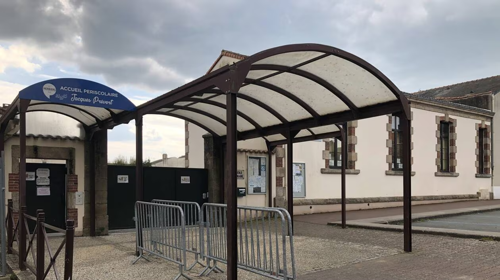

-réunion de service à 9h30
-visite à l’école publique Jacques Prévert avec Guillaume et le directeur. Restaurant scolaire en travaux, prendre des repères pour la une de septembre (école + renouveaux et investissement de la ville dans l’éducation et la scolarité des enfants.)

-bien faire la différence entre journalisme et communication : journaliste peut donner son avis ou ses sentiments (de manière légère) contrairement au service communication qui doit uniquement relater les faits, faire parler les élus et le Maire et donner l'image souhaitée aux éléments présentés